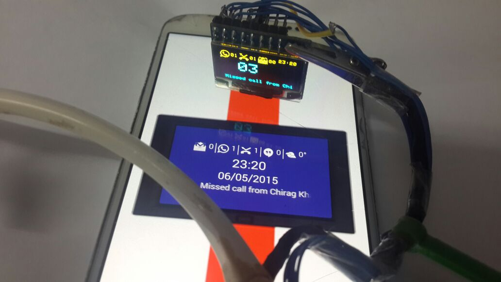
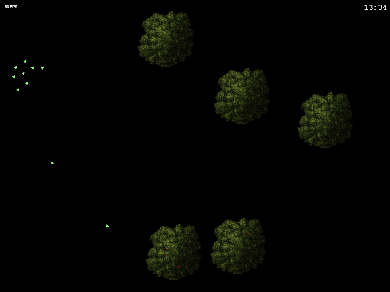
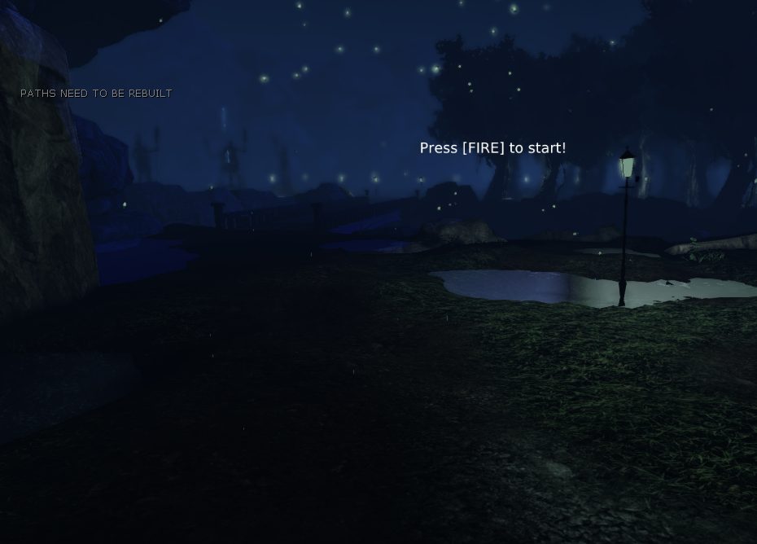

Fork me on GitHub
I am a Developer.|
Web Development - AI - Software Engineering - Hardware Prototyping - Game Dev
About Me
I am a final year student of Bachelors of Computer Science from VIT University, expected to graduate in June, 2015. I have a specific interest in AI, automation, IoT, web development and open-source tech. If would like to discuss about an opportunity you think I might be interestedf in, feel free to contact me at tapanranjan@gmail.com
My Projects
Use the left and right scrollers to browse through my projects.


AVDA
Augmented vision digital assistant (IoT based tech-demo, Arduino/Android assistive spectacles). The device can connect to any anroid smart phone and display notifications, notifications and incoming calls live from the phone. The aim was to create a cheap and portable prototype. The device can be clipped on to any ordinary pair of spectacles and connects using bluetooth to any anroid smartphone via an app.
Github

TSP solver
Genetic Algorithm based TSP (Travelling Salesman Problem) Solver. Finds near optimal solutions by iteratively using genetic algorithms.
JS file containts the x and y co-od for all the cities (change if needed). The next gen button will run the algorithm 150 times and print all the data
Github • Live

Phaser.io / AI tech demo
Artificial Intelligence and Phaser.io tech demo. (Runs at 60fps constant in the browser, even with large amount of agents)
Animals are generated, they go towards the mouse pointer. They also prefer moving in flocks, but will leave their herds if they get really hungry.
Github • Live

Project REM
Project Rem is an unreal engine tech demo (third person puzzle game). I was responsible for texture development, lighting and camera scripting in UnrealScript. (Team of 6).
Youtube